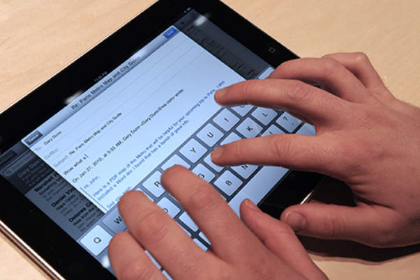

Consejos para evitar riesgos visuales an el uso de dispositivos electrónicos
La época navideña trae consigo vacaciones, celebraciones, tiempo libre y, sobre todo, regalos. Cada vez son más los niños y adolescentes que piden en sus cartas artículos tecnológicos como tablets, consolas o smartphones.
Este tipo de dispositivos electrónicos ha experimentado tal crecimiento que, según estudios, más de la mitad de los hogares con niños de entre 3 y 15 años ya dispone de una tablet u ordenador. De hecho, cada vez son más los fabricantes que expanden su público objetivo y lanzan al mercado modelos específicos para el sector infantil.
El uso moderado de estas nuevas tecnologías puede llegar a mejorar el rendimiento en tareas que exigen una determinada atención visual (coordinación ojo-mano, tiempo de reacción, identificación de objetos en movimiento…). Sin embargo, a pesar de los beneficios que podrían tener entre la población infantil y adolescente, debemos recalcar que la utilización abusiva de smartphones, portátiles o tablets puede provocar “fatiga visual” que se manifiesta como irritación, enrojecimiento ocular, ardor, sequedad, picor, migrañas o cansancio. Si no se modifica esta conducta, estos problemas pueden reflejarse de manera negativa en el rendimiento académico del niño y, de seguir así, esta población se verá afectada por la miopía de una manera alarmante.
La utilización abusiva de estas tecnologías por niños y adolescentes puede provocar “fatiga visual” que se manifiesta como irritación, enrojecimiento ocular, ardor, sequedad, picor, migrañas o cansancio.
Estudios de especialistas han llegado a cuantificar esta influencia y pronostican hasta un incremento del 33% de esta alteración visual en los jóvenes para el año 2020 como consecuencia del uso de la tecnología.
Por ello, desde ‘Somos optometristas’ te ofrecemos una serie consejos a seguir para evitar o reducir la aparición de daños en la visión al utilizar dispositivos electrónicos de manera continuada:
- Ajusta el contraste y la luz de la pantalla a un nivel adecuado. El brillo no debe ser ni excesivo ni insuficiente. Además, mantén siempre una buena iluminación general de la habitación, y no a oscuras.
- Coloca el dispositivo de forma que evite el reflejo de luces directas y siempre preferiblemente a una altura un poco más baja que la de los ojos.
- Controla la distancia ojos-pantalla. Un distancia corta obliga a un excesivo esfuerzo acomodativo del sistema visual. Se recomienda una distancia mínima equivalente a la medida desde el codo hasta los dedos para los smathphones y tablets y del hombro hasta los dedos para las pantallas convencionales.
- Parpadea frecuentemente para evitar los síndromes de ojo seco. Además, procura que la pantalla del dispositivo se encuentre siempre limpia y sin huellas, para reducir el esfuerzo al enfocar.
- Realiza descansos periódicos y limita el tiempo total. El control del horario de uso es fundamental. Deja de enfocar la pantalla próxima y fija la mirada en objetos que estén más lejanos para evitar cansancio, fatiga visual, picor, escozor e, incluso, dolores de cabeza.
Además de estos consejos, recomendamos a la población que acudan a las revisiones del óptico-optometrista al menos una vez al año.
Fuente: Jorge L. Maguilla Aguilar, Óptico-Optometrista, Colegiado COOOA 3.337; https://www.tuoptometrista.com/consejos-importantes-para-evitar-riesgos-visuales-ante-el-uso-de-dispositivos-electronicos-en-ninos-y-adolescentes/